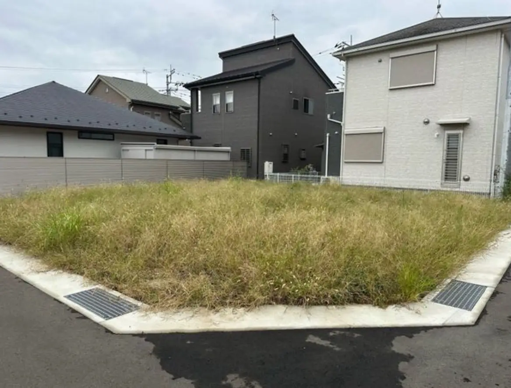
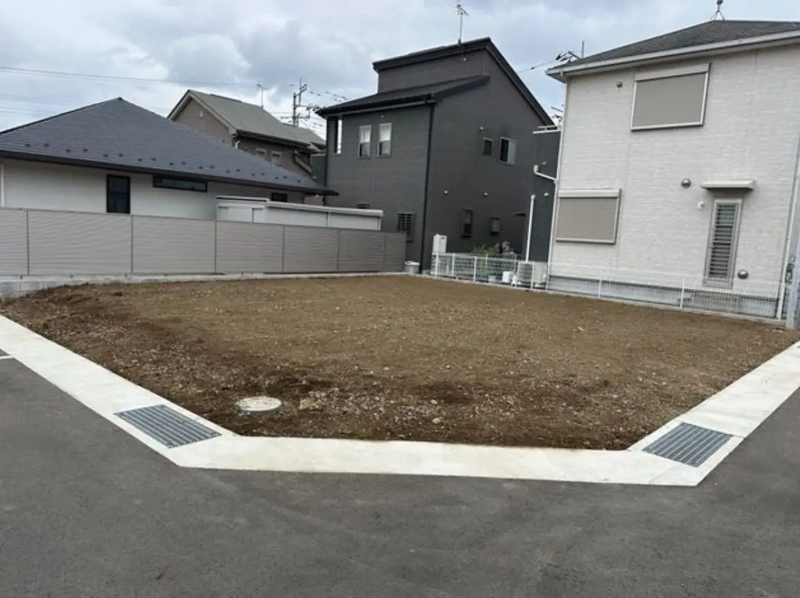

見積もり後の追加料金なし
内容と金額をご説明し、ご納得いただいてから着手します。
神奈川県全域｜見積もり無料
庭の手入れも、家具の組み立ても、片付けも。
暮らしの「ちょっと困った」に、顔の見えるスタッフが駆けつけます。

BEFORE
AFTERここまで、すっきり。実際の施工事例を見る →
WHAT WE DO
専門業者を探し分けなくても大丈夫。小さな用事ひとつから、複数の作業をまとめたご相談まで柔軟に対応します。
粗大ごみ、引越し前後の整理、お部屋や物置の片付け
事例を見る →02草むしり、剪定、伐採、防草シート施工
事例を見る →03水回り、窓、空室、お墓などの清掃
事例を見る →04家具の組み立て・移動・調整、看板製作、簡単なDIY
事例を見る →05蛇口や網戸など、住まいの気になる箇所を確認・対応
この仕事を相談する →06買い物、付き添い、お墓参りなど、内容を問わずまず相談
この仕事を相談する →WHY MUST
内容と金額をご説明し、ご納得いただいてから着手します。
急ぎのご相談にもできる限り柔軟に。土日祝日も受付。
一人暮らしやご年配の方にも安心いただける対応を心がけます。
HOW IT WORKS
困っていることをそのままお聞かせください。
作業内容と料金をご案内します。
周囲に配慮しながら丁寧に進めます。
仕上がりをご確認いただいて完了です。
FAQ
はい。見積もりは無料です。内容と金額を確認してからご判断ください。
横浜・川崎・相模原・藤沢・横須賀・鎌倉など、神奈川県全域に対応します。
合意した内容を理由なく追加請求することはありません。追加作業は改めてご案内します。
もちろんです。頼めるか分からない内容も、まずはご相談ください。
CONTACT
確認後、担当スタッフより1営業日以内にお電話またはメールでご連絡します。